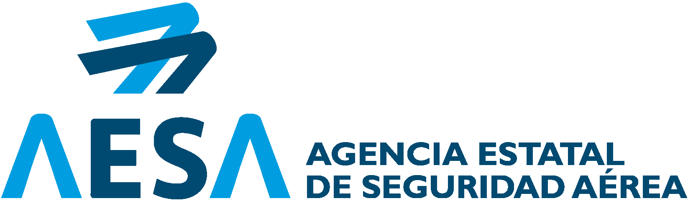
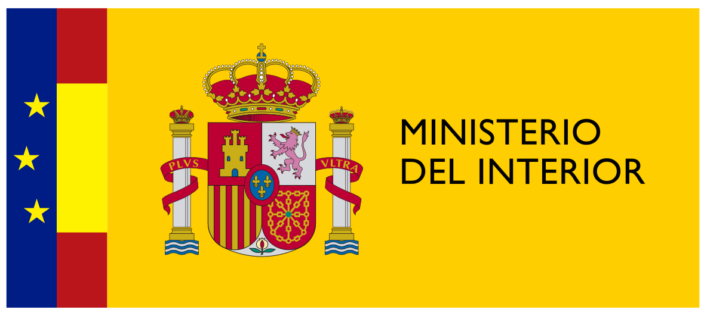

El plano detalle.
Texturas, miradas y gestos a un palmo, con la nitidez y el ritmo de una pieza de cine. El plano cercano que da alma a lo que se cuenta desde el aire.
Piloto de drones y operador de cámara. Cine aéreo en toda España.
Texturas, miradas y gestos a un palmo, con la nitidez y el ritmo de una pieza de cine. El plano cercano que da alma a lo que se cuenta desde el aire.
Un solo vuelo FPV que llega desde el aire, cruza la puerta y recorre el espacio como lo viviría quien lo visita.
Drones FPV de 2,5" a 7": interiores, proximidad y persecución a alta velocidad.
Cada sector pide un movimiento distinto. Estos son los cuatro en los que trabajo.
Spots, series y videoclips. Me integro con dirección y foto para que el aéreo se planifique como un plano más del guion, no como un extra.
Restaurantes, comercios y empresas. Un vuelo FPV por dentro enseña el espacio, el ambiente y el equipo en pocos segundos, listo para web y redes.
Campañas de destino, festivales y deporte, y retransmisiones en directo desde el aire. Material listo para campaña y redes, en horizontal y en vertical nativo.
Promociones, villas, hoteles y seguimiento de obra. Fotografía de 100 MP y recorridos FPV por interiores que venden antes de la primera visita.
Apertura variable de f/2.0 a f/11. Abro el diafragma de noche y lo cierro a pleno sol: la exposición se decide en el aire, no en el ordenador.
DJI Mavic 4 Pro: 28, 70 y 168 mm en el mismo vuelo, sin aterrizar para cambiar de plano.
Tu navegador no puede mostrar el modelo 3D. La ficha técnica sigue a continuación.
6K/60
HDR en 10-bit 4:2:2 y D-Log para etalonar con el resto del rodaje.
100 MP
Sensor 4/3 Hasselblad: fotografía para gran formato y recortes sin perder detalle.
4K/120
Cámara lenta real para agua, deporte y vehículos.
360°
Gimbal de giro libre: rotaciones de cámara completas en un solo movimiento.
51 min
De autonomía por batería: más tomas en la ventana de luz buena.
Tres focales equivalentes, del gran angular al tele que comprime montañas y aísla al sujeto a distancia segura.
Del FPV de 5" al de 2,5" que entra por una ventana. Arrastra cada modelo para girarlo.
FPV · Freestyle
Ágil y preciso: persecuciones, giros cerca de estructuras y planos dinámicos de deporte y motor.
FPV · Protegido
Hélices protegidas y estabilización a bordo: FPV fluido cerca de estructuras y en espacios técnicos.
FPV · Sub-250 g
Por debajo de 250 g: la normativa le da margen para volar cerca de personas y en interiores. Atraviesa puertas, naves y salones.
Tierra
Fotografía de 33 MP y vídeo 4K 10-bit estabilizado: entrevistas, detalle y la parte de la historia que pasa a ras de suelo.
Equipo completo: DJI Mavic 4 Pro y DJI Mini 4 Pro · FPV de 7", 5", 3" y 2,5" (sub-250 g) · DJI Avata 2 · Sony A7 IV con DJI RS 4 Mini.
Desde el aire y a ras de suelo. Toca cualquier imagen para verla a pantalla completa.
Marcas, negocios y eventos que ya han confiado su plano aéreo.
Piloto con certificados A1/A2/A3, STS-01 y STS-02. Tramito autorizaciones y coordinaciones con AESA y ENAIRE para zonas urbanas, espacio aéreo controlado y vuelos especiales. Tú solo me dices dónde.
Localización, plan de vuelo, meteorología y franjas de luz antes de rodar. El día de rodaje solo queda volar.
Procedimientos de seguridad adaptados a cada operación y seguro de responsabilidad civil en todos los vuelos.
Material en log de 10 bits listo para etalonar o editado y etalonado para publicar, en horizontal y vertical.
Cuéntame qué quieres rodar, dónde y cuándo. Te respondo con una propuesta de planos, equipo y permisos.
Cada vuelo se opera dentro del marco europeo y español para drones. Estos son los documentos que lo acreditan. Registro, seguro y declaración STS pendientes de confirmar
Registro de operador UAS
AESA · Operador registrado
Seguro de responsabilidad civil
Póliza en vigor Pendiente
Declaración operacional STS-01 / STS-02
AESA Pendiente de confirmar
Certificado de competencia A1/A3
AESA
Certificado de competencia A2
AESA
Escenarios estándar STS-01 y STS-02
Certificado de piloto · AESA
Coordinación en espacio aéreo controlado
ENAIRE · cuando el vuelo lo requiere
Comunicación de vuelos en entorno urbano
Ministerio del Interior · cuando la operación lo exige
Permisos de rodaje
Ayuntamiento · según el municipio
FPV de 2,5" de menos de 250 g
Su peso es clave al valorar la normativa aplicable a cada operación
Reglamento de Ejecución (UE) 2019/947
Unión Europea
Reglamento Delegado (UE) 2019/945
Unión Europea
Real Decreto 517/2024
Gobierno de España

Agencia Estatal de Seguridad Aérea Gestor de navegación aérea en España
Gestor de navegación aérea en España

Ministerio del Interior